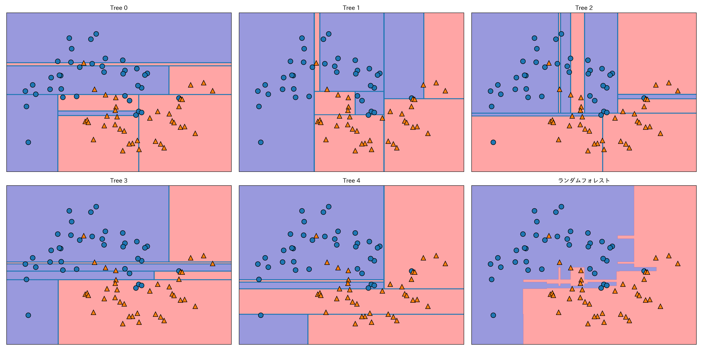
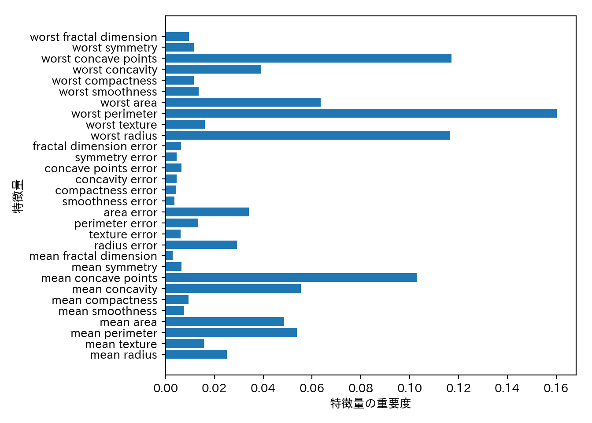
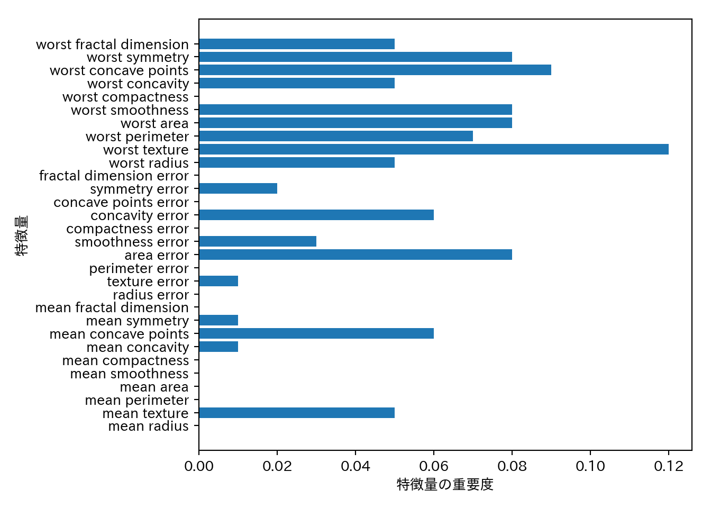

3.1 アルゴリズム5 決定木のアンサンブル法
- アンサンブル法 (Ensembles): 複数の機械学習モデルを組合せてより強力なモデルを構築する手法。
- ランダムフォレストと勾配ブースティングが有名。
3.1.1 ランダムフォレスト
- 決定木の過剰適合しやすいという欠点に対する対処法の一つ。
- 少しずつ異なる決定木をたくさん作って、その平均をとるという手法。
- 木が沢山あるので森
3.1.1.1 ランダムフォレストの構築
- 少しずつ異なる決定木は次のように作成する。
- 元のデータセットからブートストラップサンプリング(復元抽出)により新しいデータセット(ブートストラップサンプル)を作成する。
- 新しいデータセットから決定木を作る。このとき、そのままではブートストラップサンプルから生成される決定木の相関が高くなるので、さらに一工夫することで木の多様性を高める。
- 分割に使う特徴量を選択する前に、\(d\)個の特徴量からランダムに\(d'\)個の特徴量を選ぶ。
- \(d'=\lfloor\sqrt{d}\rfloor\)が推奨されているが問題によって調整する必要がある。
- sklearnでは
max_features=で指定する。 max_features=が大きいと木の間の相関が高まり、訓練データに適合しやすくなる。max_features=が小さいと木の間の相関は減るが、深いところまで探索しないと訓練データに適合できなくなる。
- 選択された\(d'\)個の特徴量から最適な分割を与える特徴量と分割点を定める。
- 上記の手順を全てのノードで実行する。
- 予測の際は全ての決定木に対して予測する。
- 回帰のとき: 平均値を予測結果とする。
- クラス分類のとき: ソフト投票(soft voting: 各木の予測確率の平均値が最大のクラスを予測クラスとする)でクラスを決める。
- ソフト投票に対するハード投票(hard voting)は、各木に対する予測クラスを先に求め、その多数決で決めるもの。
3.1.1.2 ランダムフォレストの解析
two_moonsデータセットにランダムフォレストを適用する。
from sklearn.ensemble import RandomForestClassifier
from sklearn.datasets import make_moons
from sklearn.model_selection import train_test_split
X, y = make_moons(n_samples=100, noise=0.25, random_state=3)
X_train, X_test, y_train, y_test = train_test_split(X, y, stratify=y, random_state=42)
forest = RandomForestClassifier(n_estimators=5, random_state=2)
forest.fit(X_train, y_train)それぞれの決定木はestimator_に格納されているので、最終的な予測とともに可視化してみよう。
fig, axes = plt.subplots(2, 3, figsize=(20, 10))
for i, (ax, tree) in enumerate(zip(axes.ravel(), forest.estimators_)):
ax.set_title("Tree {}".format(i))
mglearn.plots.plot_tree_partition(X_train, y_train, tree, ax=ax)
mglearn.plots.plot_2d_separator(forest, X_train, fill=True, ax=axes[-1, -1], alpha=.4)
axes[-1, -1].set_title("ランダムフォレスト")
mglearn.discrete_scatter(X_train[:, 0], X_train[:, 1], y_train)
もう一つの例としてcancerにランダムフォレストを適用してみよう。今回は木の数は100とする。
from sklearn.datasets import load_breast_cancer
cancer = load_breast_cancer()
X_train, X_test, y_train, y_test = train_test_split(
cancer.data, cancer.target, random_state=0
)
forest = RandomForestClassifier(n_estimators=100, random_state=0)
forest.fit(X_train, y_train)
print("訓練セットの精度: {:.3f}".format(forest.score(X_train, y_train)))
## 訓練セットの精度: 1.000
print("テストセットの精度: {:.3f}".format(forest.score(X_test, y_test)))
## テストセットの精度: 0.972ランダムフォレストはチューニングをしなくてもデフォルトのパラメータで十分に高い精度を出すことが多い。
複数の木の平均として求めるため、特徴量の重要度の信頼性も高い。
n_features = cancer.data.shape[1]
plt.barh(range(n_features), forest.feature_importances_, align='center')
plt.yticks(np.arange(n_features), cancer.feature_names)
plt.xlabel("特徴量の重要度")
plt.ylabel("特徴量")
3.1.1.3 長所、短所、パラメータ
- ランダムフォレストは現在最も広く使われている機械学習手法の一つ。
- 強力で、チューニングをさほど必要とせず、スケール変換も不要。
- 複数の木を合成する関係上、モデルの解釈は決定木より難しくなる。簡単な解釈が欲しければ決定木を使うのも手。
- 個々の木を作るプロセスは独立なので、並列化も容易にできる。使用コア数は
n_jobsで指定し、-1を指定すれば全てのコアを使う。 - 高次元で疎なデータに対しては上手く機能しない事が多い。線形モデルを使おう。
- 訓練にも予測にも時間がかかり、メモリも多く使う。速度やメモリが重要な時は線形モデルを使おう。
n_estimatrosとmax_features、max_depthなどの枝刈りパラメータは検討の余地がある。n_estimatorは時間とメモリの許す限り大きくすべきだ。max_featuresはデフォルトでは以下の設定になっており、大抵の場合はデフォルトでも問題はない。- クラス分類:
sqrt(n_features) - 回帰:
n_features
- クラス分類:
max_featuresやmax_leaf_nodesを設定すると性能が上がったり、訓練と予測の時間が縮まることもある。
3.1.2 勾配ブースティング回帰木(勾配ブースティングマシン)
- 1つ前の決定木を次の決定木で修正するように学習が進む。
- デフォルトでは乱数性は無い。
- 深さ1〜5の浅い決定木が使われる。これによりメモリと計算時間を節約できる。
- 弱学習器(weak learner)を複数組み合わせる。
- ひとつの学習器は限られた範囲で良い予測を与えるだけだが、組み合わせることで性能を向上させる。
- ランダムフォレストよりパラメータの影響をうけるが、きちんとチューニングをすればランダムフォレストを上回る性能を出せる。
- 重要なパラメータとしてlearning_rate(学習率)がある。これは個々の決定木がどの程度補正を行うのかの強さを決定するパラメータで、大きいほど補正が強い = モデルが複雑になる。
cancerデータで例を見る。
from sklearn.ensemble import GradientBoostingClassifier
X_train, X_test, y_train, y_test = train_test_split(
cancer.data, cancer.target, random_state=0
)
gbrt = GradientBoostingClassifier(random_state=0)
gbrt.fit(X_train, y_train)
print("訓練セットに対する精度: {:.3f}".format(gbrt.score(X_train, y_train)))
## 訓練セットに対する精度: 1.000
print("テストセットに対する精度: {:.3f}".format(gbrt.score(X_test, y_test)))
## テストセットに対する精度: 0.958過剰適合が疑われる(訓練セットの精度が高すぎる)ので、モデルを単純にする。
## 枝刈りの深さを浅くする
gbrt = GradientBoostingClassifier(random_state=0, max_depth=1)
gbrt.fit(X_train, y_train)
print("訓練セットに対する精度: {:.3f}".format(gbrt.score(X_train, y_train)))
## 訓練セットに対する精度: 0.991
print("テストセットに対する精度: {:.3f}".format(gbrt.score(X_test, y_test)))
## テストセットに対する精度: 0.972## 学習率を下げる
gbrt = GradientBoostingClassifier(random_state=0, learning_rate=.01)
gbrt.fit(X_train, y_train)
print("訓練セットに対する精度: {:.3f}".format(gbrt.score(X_train, y_train)))
## 訓練セットに対する精度: 0.988
print("テストセットに対する精度: {:.3f}".format(gbrt.score(X_test, y_test)))
## テストセットに対する精度: 0.965この例では枝刈りを強くしたほうが汎化性能が上がった。パラメータを可視化してみる。
gbrt = GradientBoostingClassifier(random_state=0, max_depth=1)
gbrt.fit(X_train, y_train)
n_features = cancer.data.shape[1]
plt.barh(range(n_features), gbrt.feature_importances_, align="center")
plt.yticks(np.arange(n_features), cancer.feature_names)
plt.xlabel("特徴量の重要度")
plt.ylabel("特徴量")
- 勾配ブースティングマシンの特徴量の重要度をランダムフォレストと比較すると、いくつかの特徴量が無視されていることがわかる。
- 基本的にはランダムフォレストを先に試したほうが良い。
- 予測時間を短くしたい、チューニングによってギリギリまで性能を高めたいという場合には勾配ブースティングを試す価値がある。
- 勾配ブースティングマシンを大きな問題に試したければ、
xgboostパッケージの利用を検討したほうが良い。
3.1.2.1 長所、短所、パラメータ
- 教師あり学習の中で最も強力なモデルの一つ。
- 並列化できないので訓練にかかる時間を短くできない。
- パラメータに影響されやすいので、チューニングを注意深く行う必要がある。
- スケール変換の必要がない、疎なデータには上手く機能しないという点はランダムフォレストと同様。
- 主なパラメータは
n_estimatorsとlearning_rateであるが、ランダムフォレストと異なりn_estimatorsは大きくすれば良いというものではない。大きいほど過学習のリスクが高まる。n_estimatorsをメモリや学習時間との兼ね合いから先に決めておき、learning_rateをチューニングするという方法がよくとられる。 max_depthは非常に小さく、5以下に設定される場合が多い。